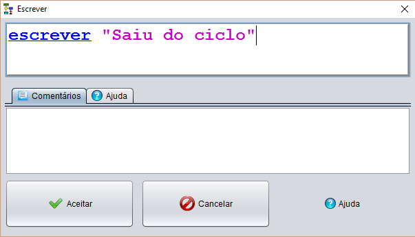

Esta instrução pede ao utilizador a introdução de texto para posteriormente esse texto ser apresentado na consola
A introdução de texto pode ser do tipo:
Variável
Constante
"Texto"
[Expressão]
Exemplos:

Declaração da Instrução

Instrução declarada
Fluxograma com uma instrução write implementada

Como podemos ver na imagem a baixo, o resultado da instrução write vai diretamente para a consola.